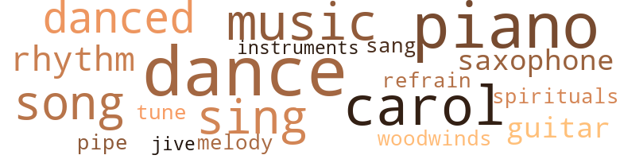
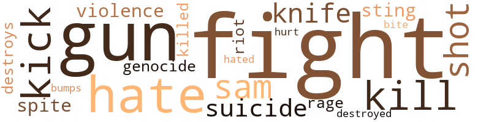

Francisco, by Mills, Allison (1974)
72 music-related terms matched in this text.
Most frequent terms in this topic: dance (11); piano (10); carol (8); music (7); sing (6)
carol.n.01
Definition: joyful religious song celebrating the birth of Christ
| word | sentence |
|---|---|
| carol | we watched t.v. and lay on the beach , carol asked us ova to drink some wine , francisco went ova and : sat up and enter - tained them with his jokes , i went inside chris 's house for a while , and then went ova to carol 's and listened to the roaring laughta of carol , this overweight pink man bulgin out of his bikini bathin suit , and a sweet girl with long blonde hair , carol is in her thirties - her body firm and taken care of . |
| carol | we watched t.v. and lay on the beach , carol asked us ova to drink some wine , francisco went ova and : sat up and enter - tained them with his jokes , i went inside chris 's house for a while , and then went ova to carol 's and listened to the roaring laughta of carol , this overweight pink man bulgin out of his bikini bathin suit , and a sweet girl with long blonde hair , carol is in her thirties - her body firm and taken care of . |
| carol | we watched t.v. and lay on the beach , carol asked us ova to drink some wine , francisco went ova and : sat up and enter - tained them with his jokes , i went inside chris 's house for a while , and then went ova to carol 's and listened to the roaring laughta of carol , this overweight pink man bulgin out of his bikini bathin suit , and a sweet girl with long blonde hair , carol is in her thirties - her body firm and taken care of . |
| carol | we watched t.v. and lay on the beach , carol asked us ova to drink some wine , francisco went ova and : sat up and enter - tained them with his jokes , i went inside chris 's house for a while , and then went ova to carol 's and listened to the roaring laughta of carol , this overweight pink man bulgin out of his bikini bathin suit , and a sweet girl with long blonde hair , carol is in her thirties - her body firm and taken care of . |
| carol | at one in the morning dave came and peeped his head through his bedroom door and found me and Francisco in arms hoggin each otha - Francisco and i had just come back from carol 's house next door . |
| carol | carol drove up at the same time Francisco and i were headed down the steps to our gift house , friendly and all she grinned and invited us ova to her house for a drink , we went , she had a guy ova sittin on her plastie pillows , who offered francisco advise about how distributors will rip you off man , and that 's how it is . |
| carol | francisco said the point is to talk about how you 're not gon na get ripped off - the ways it can be prevented , carol was okay i told her i saw her on her t.v. show , and it was a nice show , she asked me if as an actress could i offa her a positive critique , i told her i thought she could comb her hair back so folks could see her face , cause her bangs were monstrous , i mean she looked alright in life like that , but i think she did herself an injustice with all them bangs hangin all over her eyebrows , so i sipped wine , watched smoke circle in the air , while francisco drank beer , imagine , he do n't hardly even drink , he 's neva taken acid , he do n't even take vitamins , he is totally natural , i mean i have n't met anyone like that in years still walkin around , you figure everybody in america is on some kind of pills or somethin - they be advertising pills on t.v. for kids and shit , pills to put folks to sleep and shit , we split from carol 's house biddin her and her guest a good night , we walked arm in arm to our malibu hideaway , the ocean 's night roarin strong like a lion , francisco and i went in the den and watched t.v. i left him on the den couch afta a while , i got tired and went to bed . |
| carol | francisco said the point is to talk about how you 're not gon na get ripped off - the ways it can be prevented , carol was okay i told her i saw her on her t.v. show , and it was a nice show , she asked me if as an actress could i offa her a positive critique , i told her i thought she could comb her hair back so folks could see her face , cause her bangs were monstrous , i mean she looked alright in life like that , but i think she did herself an injustice with all them bangs hangin all over her eyebrows , so i sipped wine , watched smoke circle in the air , while francisco drank beer , imagine , he do n't hardly even drink , he 's neva taken acid , he do n't even take vitamins , he is totally natural , i mean i have n't met anyone like that in years still walkin around , you figure everybody in america is on some kind of pills or somethin - they be advertising pills on t.v. for kids and shit , pills to put folks to sleep and shit , we split from carol 's house biddin her and her guest a good night , we walked arm in arm to our malibu hideaway , the ocean 's night roarin strong like a lion , francisco and i went in the den and watched t.v. i left him on the den couch afta a while , i got tired and went to bed . |
dance.n.01
Definition: an artistic form of nonverbal communication
| word | sentence |
|---|---|
| dances | cause he dances real funky - he finished his film yesterday , this morning george eves called up and said francisco ought to marry me . |
| dances | this big gleamin nigga who dances with this famous dance group in s.f. and has his own dance studio to come'around and be in the movie , ba got a ring in his ear , and is so glorious - ly , ravenously black with this thick deep gay roarin comin from the belly laughter celebrated in flamboyant theatrics flarin in everythin he does - i mean in the way he dresses , talks , walks , sneezes , shakes your hand , enters a room , leaves a party , picks up a glass , greets you , and bids you a goodbye , ba is one marvelous big eyed dude , with bright teeth . |
| dance | this big gleamin nigga who dances with this famous dance group in s.f. and has his own dance studio to come'around and be in the movie , ba got a ring in his ear , and is so glorious - ly , ravenously black with this thick deep gay roarin comin from the belly laughter celebrated in flamboyant theatrics flarin in everythin he does - i mean in the way he dresses , talks , walks , sneezes , shakes your hand , enters a room , leaves a party , picks up a glass , greets you , and bids you a goodbye , ba is one marvelous big eyed dude , with bright teeth . |
| dance | this big gleamin nigga who dances with this famous dance group in s.f. and has his own dance studio to come'around and be in the movie , ba got a ring in his ear , and is so glorious - ly , ravenously black with this thick deep gay roarin comin from the belly laughter celebrated in flamboyant theatrics flarin in everythin he does - i mean in the way he dresses , talks , walks , sneezes , shakes your hand , enters a room , leaves a party , picks up a glass , greets you , and bids you a goodbye , ba is one marvelous big eyed dude , with bright teeth . |
| dance | i shall fly into the pastel colored smudged on my fingertips from paintin too many dreams on canvas , but i shall hang them up so that they may be real , people dance , forget the decay of limpin love , only rememberin that we are human and conjurin up the will to be strong , to be good , children shall come of their own accord , lova 's will leave each otha to love foreva , and if i am patient i will learn to wait and know when to fight , so i can dance , and sing all night long ( decisioned pain , left out to dry . |
dance.v.03
Definition: skip, leap, or move up and down or sideways
| word | sentence |
|---|---|
| danced | we went out and danced to stevie wonder 's latest album and carried on , it 's hard to dance with francisco cause all i want to do is laugh all ova . |
| dance | we went out and danced to stevie wonder 's latest album and carried on , it 's hard to dance with francisco cause all i want to do is laugh all ova . |
| dance | one night francisco , exavier and i were rid in along be-boppin after comin from mini 's can do ( an old timey lookin bar where folks go to dance to old timey music , out of the forties and fifties , i played on an upright piano , they got this intermission where singas who are on their way to gettin on their way sing , and carry on ) . |
| dance | he came and got me to dance with him . |
| danced | but as i danced with francisco surrounded by all those white folks i just did n't get the same feelin . |
| dance | i do n't know , i felt strange cause i was happy and here i was at a party that i wanted to come to , and i had a lot to dance and feel good about because Francisco 's film was good - but here - there i sat - sittin in a chair discussin the dif - ference between n.y. , s.f. and l.a. with this soft-spoken shy short , long hair down to his ass rubber banded in a ponytail , white young man . |
| dance | and dance ? |
| danced | i danced , i danced till my body was loose and i could feel these lights - these electrical cur - rents comin out of me . |
| dance | see , i love to dance , i love to dance in the rain , somethin in my spirit just comes alive when i 'm dancin . |
| dance | see , i love to dance , i love to dance in the rain , somethin in my spirit just comes alive when i 'm dancin . |
| danced | Sunday shoes were only worn to church or special occasions , some - times my mother and her three brothers would sneak and wear the Sunday shoes to school , but my momma 's momma always caught them before they snuck out the house ... mom had two dresses , two fine dresses , her mom would wash and iron and starch them every otha night , mom always looked well taken care of she said , they did n't have much , but every - thin was the best , mom always says poverty is in the mind , yeah , some folks would call my granddad an uncle tom just like folks call black people who smiled and danced in order to survive uncle toms . |
| dance | i do not believe all that grinnin was weakness , i am positive some of it was a strength a magie all its own , a genius within our race , for we multiplied , we did n't use the gun all the time , but we did if we had to , sometimes we played a part , i ca n't figure out all this mess , all i know is i can not deny the places from which i come , i accept them , and try to learn , grow and expand myself further , no repeat performances , should n't no nigga have to sing and dance again - that 's already been done , it is only for us to know what we want , and go and get it . |
| danced | i danced to african musie with african men all of whom were much shorter than i - while francisco stood in a corner most of the evenin eyein this beautiful dark brown black girl wearin a bright orange dress designed with the back out . |
guitar.n.01
Definition: a stringed instrument usually having six strings; played by strumming or plucking
| word | sentence |
|---|---|
| guitar | francisco and i stood on a street comer - broadway in s.f. , down in north beach listenin to the blue drifter , francisco named him the blue drifter , his real name is pete , some folks call him walkin pete , he 's an old pretty faced , fine features shinin smilin singin his songs deep black man - ai n't no river that rocks like me ( his fingers run tip and down the strings of the guitar as he sits on a little cardboard box , a bottle of liquor beside him , tappin his feet ) ai n't no wind , ocean or land that do the jitter back and forth like my legs can . |
| guitar | ( his hands fell on his guitar , while his cousin patted his feet and gay talkin tom walked by - another old wino in baggy pants , bowtie , clean white socks , and a neatly pressed white shirt - his shoes neatly tied , hat in hand , skipped by in his spry spirit doin a beautiful slidin easy soft shoe in time to the blue drift - er 's melody , the blue drifter nodded in jubilee at gay talkin tom as he glided on away . ) |
music.n.01
Definition: an artistic form of auditory communication incorporating instrumental or vocal tones in a structured and continuous manner
| word | sentence |
|---|---|
| music | I WANTED TO MAKE IT WHEN I REALIZED I COULD N'T FLY my jazzman do n't know how to sing , he do n't know nothin bout no woodwinds drums , no brass , no strings , but he 's so fine his music 's in his eyes and he plays what he sees with a funky saxophone sheen on the silver screen . |
| music | that old black man was music , he had a cap on his head , polka dotted in filth and grease , he 'd tap his cap every now and then in a rhythmical beat , he had neva seen me on t.v. , which was a nice feelin - he was so beautiful . |
| music | pharoah sanders was playin that night , all that good music flyin , people ease , omette coleman - made me feel like i was in n.y. , down near the Iowa east side , made me think about goin to slugs one night , and listenin to ornette coleman blow on his saxophone , i rememba lookin at francisco and feelin like a twelve year old kid . |
| music | cause he works hard on his film , and the next film he wants to do , and i understand how that is cause when i work on music that 's all i can think about is the song , and i just understand cause it takes a lot of concentration to get anything done , and maybe men do n't get any fun out of life till after they 've worked , then they go crazy , and maybe after the film is out and everythin we 'll go away and make love all the time . |
| music | one night francisco , exavier and i were rid in along be-boppin after comin from mini 's can do ( an old timey lookin bar where folks go to dance to old timey music , out of the forties and fifties , i played on an upright piano , they got this intermission where singas who are on their way to gettin on their way sing , and carry on ) . |
| music | i forget about my music - i forget about myself some - times . |
| music | a little cardboard screen , he looks like a natural nut sittin all hunched up on a stool with the bedroom blinds closed , editin his film , choppin his film up , crackin up at the music , lovin the people in the scenes , talkin-cussin to himself , sometimes i go in there , and i do n't go in there often cause he tells me to get out-or not to step on the film . |
musical_instrument.n.01
Definition: any of various devices or contrivances that can be used to produce musical tones or sounds
| word | sentence |
|---|---|
| instruments | a mad scientist or somethin with all those little strange instruments in front of him . |
piano.n.01
Definition: a keyboard instrument that is played by depressing keys that cause hammers to strike tuned strings and produce sounds
| word | sentence |
|---|---|
| piano | i played songs for him ova my father 's house , i turned off all the lights downstairs , and lit candles , i put one candle on the piano , so i could see what i was playin , and one near francisco , as he lay on the couch in the den . |
| pianos | francisco trips out behind james brown the way i trip out behind wheat germ , and old upright pianos slightly out of key . |
| piano | one night francisco , exavier and i were rid in along be-boppin after comin from mini 's can do ( an old timey lookin bar where folks go to dance to old timey music , out of the forties and fifties , i played on an upright piano , they got this intermission where singas who are on their way to gettin on their way sing , and carry on ) . |
| piano | i played my musie one night at mini 's can do in s.f. before i sat down at the piano bench before my fingers hit that beautiful upright piano the folks applauded , i blushed , then lifted my head up into a smile , opened my mouth , and sang , playin off . |
| piano | i played my musie one night at mini 's can do in s.f. before i sat down at the piano bench before my fingers hit that beautiful upright piano the folks applauded , i blushed , then lifted my head up into a smile , opened my mouth , and sang , playin off . |
| piano | i sure did love singin for those people while they drank beer , and wine , and i sure did love seein francisco 's smile prevail through the room , bouncin off the walls , i had stopped playin for a while , i mean i have a piano in my father 's house , but i had n't touched it for six months , cause i was hurtin from some of the experiences i had had before tryin to do an album , i went down to me breed 's to record , howeva he was n't there . |
| piano | Francisco drove us ova to our friend 's house where we ate meatloaf , salad , and soup on a pretty glass table covered with a twin size bed sheet for a tablecloth , maybe femie is right , i thought , maybe white folks just ca n't help themselves , maybe that 's their nature , well i was n't goin to waste no more time on that subject , so i ate and listened to the story of ulara , our male black friend about thirty , who told us about his car accident , earlier in the day and how he was all drugged up , i played the piano , and francisco 's sister took it upon herself to make fun of my dress , and insult me on several occasions as to why i wore my hair as i did . |
| piano | tad took me ova his house , from jonathan 's cottage where i was staying all by my own self , which was just what i needed , there was a piano , candles , and i could play the piano late at night - there were lots of books , books on everything afri - can , pictures of egyptian monuments , figures and fleas , it was a little cabin house stuck behind this main house where this bare foot college couple lived with their mud faced gigglin child , i got into straightening the cottage up , and decoratin it a little . |
| piano | tad took me ova his house , from jonathan 's cottage where i was staying all by my own self , which was just what i needed , there was a piano , candles , and i could play the piano late at night - there were lots of books , books on everything afri - can , pictures of egyptian monuments , figures and fleas , it was a little cabin house stuck behind this main house where this bare foot college couple lived with their mud faced gigglin child , i got into straightening the cottage up , and decoratin it a little . |
| piano | i mean his doors were already open , and lie was n't even that good , but he could play the piano , man , could he play the piano , everythin from jazz to classical , and the things he would improvise , in those days black men i knew , and unfortunately they were mostly actors ( so my circle was limited ) did n't look at black women lessin they bad some money and they looked to grey women for that anyway , for a long time , i could have gone around wonderin what was wrong with me . |
| piano | i mean his doors were already open , and lie was n't even that good , but he could play the piano , man , could he play the piano , everythin from jazz to classical , and the things he would improvise , in those days black men i knew , and unfortunately they were mostly actors ( so my circle was limited ) did n't look at black women lessin they bad some money and they looked to grey women for that anyway , for a long time , i could have gone around wonderin what was wrong with me . |
pipe.n.04
Definition: a tubular wind instrument
| word | sentence |
|---|---|
| pipe | nothin will eva change that way but the weather , francisco said muham - mad looked good , like in the old days , he sat up and watched him on t.v. fight jerry quarry , my dad just listened enjoyin the argument , see my dad 's a quiet dude - a heart hard workin dude , he smokes a pipe and looks real distinguished when he gets ready to , and digs dark skinned black women , but all women dig my dad . |
refrain.n.01
Definition: the part of a song where a soloist is joined by a group of singers
| word | sentence |
|---|---|
| refrain | oh certainly , in a moment , was his refrain . |
rhythm.n.04
Definition: the arrangement of spoken words alternating stressed and unstressed elements
| word | sentence |
|---|---|
| rhythm | me breed talked about angela , about white folks bein the great imitators of all time , bout the whole rip off thing , he spoke in an intelli - gent sophisticated nigga southern rhythm , i liked him . |
| rhythm | fran - cisco said he would take me to see him the next time he played somewhere , james brown got this great funkiness that started hittin me right in the gut of rhythm , francisco lay on the sofa , and i sat stretched out on the chair loose relaxed lettin the musie permeate my body - slide up my legs wide open - free , we listened to that cold sweat ova and ova . . . curtains in the living room were closed , but we could hear the beat of ocean waves joinin in . |
| rhythm | i felt francisco 's rhythm , i experienced an exchange with a man that night , that i 've neva experienced before , i felt sensual and peaceful and slow and could feel myself unwindin from anotha state i usually function in . |
sax.n.02
Definition: a single-reed woodwind with a conical bore
| word | sentence |
|---|---|
| saxophone | I WANTED TO MAKE IT WHEN I REALIZED I COULD N'T FLY my jazzman do n't know how to sing , he do n't know nothin bout no woodwinds drums , no brass , no strings , but he 's so fine his music 's in his eyes and he plays what he sees with a funky saxophone sheen on the silver screen . |
| saxophone | pharoah sanders was playin that night , all that good music flyin , people ease , omette coleman - made me feel like i was in n.y. , down near the Iowa east side , made me think about goin to slugs one night , and listenin to ornette coleman blow on his saxophone , i rememba lookin at francisco and feelin like a twelve year old kid . |
sing.v.02
Definition: produce tones with the voice
| word | sentence |
|---|---|
| sing | I WANTED TO MAKE IT WHEN I REALIZED I COULD N'T FLY my jazzman do n't know how to sing , he do n't know nothin bout no woodwinds drums , no brass , no strings , but he 's so fine his music 's in his eyes and he plays what he sees with a funky saxophone sheen on the silver screen . |
| sing | one night francisco , exavier and i were rid in along be-boppin after comin from mini 's can do ( an old timey lookin bar where folks go to dance to old timey music , out of the forties and fifties , i played on an upright piano , they got this intermission where singas who are on their way to gettin on their way sing , and carry on ) . |
| sang | i played my musie one night at mini 's can do in s.f. before i sat down at the piano bench before my fingers hit that beautiful upright piano the folks applauded , i blushed , then lifted my head up into a smile , opened my mouth , and sang , playin off . |
| sing | i mean sometimes we laughed at the same exact time/place as we listened to our man sing his song , and grunt , see james brown makes fran - cisco laugh , and feel good , and me loo now . |
| sing | i shall fly into the pastel colored smudged on my fingertips from paintin too many dreams on canvas , but i shall hang them up so that they may be real , people dance , forget the decay of limpin love , only rememberin that we are human and conjurin up the will to be strong , to be good , children shall come of their own accord , lova 's will leave each otha to love foreva , and if i am patient i will learn to wait and know when to fight , so i can dance , and sing all night long ( decisioned pain , left out to dry . |
| sing | i do not believe all that grinnin was weakness , i am positive some of it was a strength a magie all its own , a genius within our race , for we multiplied , we did n't use the gun all the time , but we did if we had to , sometimes we played a part , i ca n't figure out all this mess , all i know is i can not deny the places from which i come , i accept them , and try to learn , grow and expand myself further , no repeat performances , should n't no nigga have to sing and dance again - that 's already been done , it is only for us to know what we want , and go and get it . |
| sing | ai n't no big thing , i mean what do they know , people are so crazy they callin hitler a genius that went astray , and tricia nixon is callin her father a revolutionist on the merv griffin show , and lena home could n't even sing when she first started out so my mother tells me , and did you know half the sex male symbols in movies are homosexuals , and james bond is bald ? |
song.n.01
Definition: a short musical composition with words
| word | sentence |
|---|---|
| songs | i played songs for him ova my father 's house , i turned off all the lights downstairs , and lit candles , i put one candle on the piano , so i could see what i was playin , and one near francisco , as he lay on the couch in the den . |
| song | cause he works hard on his film , and the next film he wants to do , and i understand how that is cause when i work on music that 's all i can think about is the song , and i just understand cause it takes a lot of concentration to get anything done , and maybe men do n't get any fun out of life till after they 've worked , then they go crazy , and maybe after the film is out and everythin we 'll go away and make love all the time . |
| song | we decided revolutionists are somebody-anybody who does somethin true in this world - free from being held back by the manipulative powa money established controlling , deciding , structures at present , in terms of films , black films - we decid - ed that sweetback bad ass song was a revolutionary film in that it was a true success financially for melvin van peebles , and the most original film out there . |
| song | i mean sometimes we laughed at the same exact time/place as we listened to our man sing his song , and grunt , see james brown makes fran - cisco laugh , and feel good , and me loo now . |
| songs | francisco and i stood on a street comer - broadway in s.f. , down in north beach listenin to the blue drifter , francisco named him the blue drifter , his real name is pete , some folks call him walkin pete , he 's an old pretty faced , fine features shinin smilin singin his songs deep black man - ai n't no river that rocks like me ( his fingers run tip and down the strings of the guitar as he sits on a little cardboard box , a bottle of liquor beside him , tappin his feet ) ai n't no wind , ocean or land that do the jitter back and forth like my legs can . |
| song | neva listen to the defeatest atti - tude , havin more faith in death than in life is neva a man - a song to listen to . |
spiritual.n.01
Definition: a kind of religious song originated by Blacks in the southern United States
| word | sentence |
|---|---|
| spirituals | my mom wanted to go to college , so her dad saved his money some kind of way so she could , and when i was growin up in l.a. , walkin around in my momma 's high heels before they implemented black history in school , after the watts riot and every otha force that created some change , progress , sense of self awareness , my mom would sit me , my brothers ( i have two brothers one is twenty-seven and lives in europe , and do n't think about comin back to this country , the other is tall , beautiful , fine , seventeen and in jail for supposedly killin a cop ) and sister , down and read black poetry to us , sonie King - ston hughes , paid laurence dunbar and give up pride in black spirituals and tell us that she thought porgy and bess was de - rived from our musie but white folks made the fortune out of it , as usual , yeah , that ai n't no big thing right , but it was for me , cause words have powa , and kids laughed in school when they saw africans on the screen , and when i would try for a part in the actin profession dependin upon the time i was just right , or not black enough and my father 's father told me once in his pompous youth when i made some statement bout how i did n't believe in tips , lookin me straight in the eyes with his straight haired high yeller white lookin self , i sent your father to college from tips . |
swing.n.05
Definition: a style of jazz played by big bands popular in the 1930s; flowing rhythms but less complex than later styles of jazz
| word | sentence |
|---|---|
| jive | someone looked me straight in the eyes , francisco 's uncle harold and called me jive . |
tune.n.01
Definition: a succession of notes forming a distinctive sequence
| word | sentence |
|---|---|
| tune | i got in tune with francisco 's pace , which was slow and light and easy , my spirit in peaceful union with francisco 's . |
| melody | ( his hands fell on his guitar , while his cousin patted his feet and gay talkin tom walked by - another old wino in baggy pants , bowtie , clean white socks , and a neatly pressed white shirt - his shoes neatly tied , hat in hand , skipped by in his spry spirit doin a beautiful slidin easy soft shoe in time to the blue drift - er 's melody , the blue drifter nodded in jubilee at gay talkin tom as he glided on away . ) |
woodwind.n.01
Definition: any wind instrument other than the brass instruments
| word | sentence |
|---|---|
| woodwinds | I WANTED TO MAKE IT WHEN I REALIZED I COULD N'T FLY my jazzman do n't know how to sing , he do n't know nothin bout no woodwinds drums , no brass , no strings , but he 's so fine his music 's in his eyes and he plays what he sees with a funky saxophone sheen on the silver screen . |
46 violence-related terms matched in this text.
Most frequent terms in this topic: fight (9); hate (5); gun (3); kick (3); sam (2)
bump.n.01
Definition: a lump on the body caused by a blow
| word | sentence |
|---|---|
| bumps | yesterday i woke up and found i had broken out all ova my body with these incredible bumps and sores , i 've stayed inside mostly and only taken walks to this restaurant down the street that has newspaper pasted on its walls for wallpaper , there i have broiled salmon , broccoli , and tea every now and then , i sleep well , but i usually wake up in some kind of fit . |
destroy.v.04
Definition: put (an animal) to death
| word | sentence |
|---|---|
| destroys | that 's why he made us think we were ugly , and anythin the white man can not deal with frightens him - and he either destroys it or if he sees he can make some money , some profit he usurps , he uses , he mis - uses ... he took our religion away because it scared the life out of him . |
| destroyed | i mean i 'm always runnin off at the mouth about quality , was there quality in this film or was i nuts , i was n't nuts , i decided there was beauty in that film , yeah the sound completely destroyed it . |
fight.n.05
Definition: a boxing or wrestling match
| word | sentence |
|---|---|
| fight | but he works hard , i can feel it : when he gets into bed at night lie 's dead almost before he closes his eyes and manages a few goodnight words , he pulls me to him and holds me softly , and i think we wake up thataway , then the fight be - gins . |
| fight | nothin will eva change that way but the weather , francisco said muham - mad looked good , like in the old days , he sat up and watched him on t.v. fight jerry quarry , my dad just listened enjoyin the argument , see my dad 's a quiet dude - a heart hard workin dude , he smokes a pipe and looks real distinguished when he gets ready to , and digs dark skinned black women , but all women dig my dad . |
| fight | later after the fight , i heard where he was stayin and went over to the hotel , the guard at the gate would n't let me through and i saw ah and called him . |
| fight | we all struggle to get where we are or were-whetha it be con - sidered up or down , in between , nowhere - any point has a fight all its own . |
| fight | now that do n't mean that the fight we might be fightin at a particular time is worth it . |
| fight | you treat her right and she give you a fight , hey honey - take your big arm off me . |
fight.v.02
Definition: fight against or resist strongly
| word | sentence |
|---|---|
| fight | i remembered when i was in madison square garden watchin him fight that australian a couple of years ago . |
| fight | i shall fly into the pastel colored smudged on my fingertips from paintin too many dreams on canvas , but i shall hang them up so that they may be real , people dance , forget the decay of limpin love , only rememberin that we are human and conjurin up the will to be strong , to be good , children shall come of their own accord , lova 's will leave each otha to love foreva , and if i am patient i will learn to wait and know when to fight , so i can dance , and sing all night long ( decisioned pain , left out to dry . |
| fight | well , i sat down thinkin the victory won wonderin why did i have to fight for some more guacamole in the first damn place ? |
fury.n.01
Definition: a feeling of intense anger
| word | sentence |
|---|---|
| rage | cooly i turned to face john and found him in a rage as i said i know were n't no black faggots til we popped ova here on this side of the planet earth , or before they popped ova to our side and infested and educated us to the ways of the white culture based on the acquisition of the mink coat for the white woman , perhaps you have neva seen a white garbage can collector , or mailman , or a white wino lately , and i question your attitude toward blue collar workers - as if they were de - meanin , unself respectin forms of work . |
genocide.n.01
Definition: systematic killing of a racial or cultural group
| word | sentence |
|---|---|
| genocide | the subject changed to birth control pills and how there 's this train of thought that niggas should n't take no contraceptives cause that intent was genocide , niggas should have as many babies as possible to give growth to a majority creatin a pow - erful race , francisco said that did n't make no sense , proven so by the example in south africa - where the majority is ruled by the minority , quantity is alright , but the goal should be to develop a strong race of quality , then i started talkin bout how i did n't think no woman needed to take those pills , that a woman can control pregnancy in her mind . |
gun.n.01
Definition: a weapon that discharges a missile at high velocity (especially from a metal tube or barrel)
| word | sentence |
|---|---|
| guns | but it amazes me how some white girl can tell black men that they are weak if they do n't all carry guns , does she carry a gun ? |
| gun | but it amazes me how some white girl can tell black men that they are weak if they do n't all carry guns , does she carry a gun ? |
| gun | but anyway , their house is great and so are they - though i heard two days later that quentin pulled a gun on sarah - sarah that 's his wife , she 's a kind , wrinkled face woman in her late sixties , also thin , dressed in pants , and stylish house slippers - her hair is sprinkled grey brown hangin loosely free down to her shoul - ders , her forehead covered with short bangs , sarah jumped everytime quentin called her in his demanding King of the Konk Tone , and sarah could always go skinnin and grinnin , drippin in joy happily , droppin whatever she happened to he doin callin . . . yes baby , i hear you baby , i 'm on my way baby . |
| gun | i do not believe all that grinnin was weakness , i am positive some of it was a strength a magie all its own , a genius within our race , for we multiplied , we did n't use the gun all the time , but we did if we had to , sometimes we played a part , i ca n't figure out all this mess , all i know is i can not deny the places from which i come , i accept them , and try to learn , grow and expand myself further , no repeat performances , should n't no nigga have to sing and dance again - that 's already been done , it is only for us to know what we want , and go and get it . |
| guns | he built a two-story hut there out of bricks and straw , as i looked at the film , i saw these incredible land-animals man . . . wild animals , some crazy nigga cowboys with guns , on horseback - africans naked or in their respective style of dressing , one half-indian half nigga with a top hat on , and james brown in concert at a neighboring african village turning the women on . |
hate.n.01
Definition: the emotion of intense dislike; a feeling of dislike so strong that it demands action
| word | sentence |
|---|---|
| hate | we talked about revolutionists , i hate revolutionists , i 'm tired of all that who shot john . |
| hate | no , i do n't hate no white people , i do n't got time or energy to waste hatin white folks , they do n't deserve my hate , no i do n't hate no white man , i ai n't in all that . |
hate.v.01
Definition: dislike intensely; feel antipathy or aversion towards
| word | sentence |
|---|---|
| hate | you hate white people . |
| hate | no , i do n't hate no white people , i do n't got time or energy to waste hatin white folks , they do n't deserve my hate , no i do n't hate no white man , i ai n't in all that . |
| hate | no , i do n't hate no white people , i do n't got time or energy to waste hatin white folks , they do n't deserve my hate , no i do n't hate no white man , i ai n't in all that . |
| hated | that was only in limited circles howeva - sometimes dark black kids hated light black kids , and vice versa , but not me . |
hurt.v.04
Definition: cause damage or affect negatively
| word | sentence |
|---|---|
| hurt | the me when i did n't know anything , but thought i knew everythin , me , when i was a kid you know , there was this part of me that was unprotected , still not hardened and tough , a part of me that had n't been hurt so much that it was unbearable to feel pain , but i did n't cry . |
kick_back.v.02
Definition: spring back, as from a forceful thrust
| word | sentence |
|---|---|
| kick | i could kick his ass . |
| kick | we should all kick ass and get this mess cleaned up . |
| kick | know when to open your mouth and when to keep it shut , but i got a good mind to go up there and kick his big black ass for leavin me down here in all this heat and smog by my own self , but i wo n't - yes i will ... oh shit ! |
kill.v.10
Definition: cause the death of, without intention
| word | sentence |
|---|---|
| killed | no wonder we did n't get killed cause i asked for it several times weavin in and out of the traffic . |
| Kill | Fat Funky Martha Says , She 's Gon na Kill Herself She Ai n't Got Nothin To Live For . |
| kills | jazz is playin out of a radio box , we 're watchin this movie bout how this clown loved this woman , and comes home and finds her with another man and almost kills her and the dude , but he does n't , he is succumbed by the arms of several men who arrive on the scene from no - where , and alas is taken away , he sure did love that woman , frank says . |
killing.n.02
Definition: the act of terminating a life
| word | sentence |
|---|---|
| kill | do n't no jew want to entrust no half million dollars , to no twenty-seven year-old black dude , besides he wants to make sure francisco likes him as a friend and does n't just want his money , and i worked in a friend 's movie last week , and made two hundred dollars for two days work , the magie of life is that it does change , that you ca n't say because a man is a drunk , career ended , in jail , that bis future is dead , you ca n't say that marilyn monroe did herself a blessin by kill in herself , because her career was ova , had she lived she 'd be a de-escalated once-star , how many times married , drinkin drinkin . |
knife.n.02
Definition: a weapon with a handle and blade with a sharp point
| word | sentence |
|---|---|
| knife | my mother told me about her father who worked as a porta in a hotel in west Virginia all his life , at the end of every month the manager would call my granddad up to his office , and sittin behind a rich mahogany desk would pull a long shinin knife out from the top drawer , and say jump nigger jump . |
| knife | or come ova here slaveand tap dance before i put this knife in your subordinate neck . |
malice.n.01
Definition: feeling a need to see others suffer
| word | sentence |
|---|---|
| spite | i became cook and such always , off to the store to get beer , juices , wine , watermelon , nuts and chicken , the redubbing was completed during one weekend , it took two hard days to redub this bus scene in spite of me breed 's lectures . |
riot.n.01
Definition: a public act of violence by an unruly mob
| word | sentence |
|---|---|
| riot | my mom wanted to go to college , so her dad saved his money some kind of way so she could , and when i was growin up in l.a. , walkin around in my momma 's high heels before they implemented black history in school , after the watts riot and every otha force that created some change , progress , sense of self awareness , my mom would sit me , my brothers ( i have two brothers one is twenty-seven and lives in europe , and do n't think about comin back to this country , the other is tall , beautiful , fine , seventeen and in jail for supposedly killin a cop ) and sister , down and read black poetry to us , sonie King - ston hughes , paid laurence dunbar and give up pride in black spirituals and tell us that she thought porgy and bess was de - rived from our musie but white folks made the fortune out of it , as usual , yeah , that ai n't no big thing right , but it was for me , cause words have powa , and kids laughed in school when they saw africans on the screen , and when i would try for a part in the actin profession dependin upon the time i was just right , or not black enough and my father 's father told me once in his pompous youth when i made some statement bout how i did n't believe in tips , lookin me straight in the eyes with his straight haired high yeller white lookin self , i sent your father to college from tips . |
shoot.v.02
Definition: kill by firing a missile
| word | sentence |
|---|---|
| shot | we talked about revolutionists , i hate revolutionists , i 'm tired of all that who shot john . |
| shot | sessa was from Sweden , and appeared on the covers of the top magazines like vogue and bazaar , i had neva seen anyone that thin in my life , i had never met anyone that moved and talked in such foreign ethereal slow motion , i had neva met anyone knowingly who shot heroin before . |
sting.n.03
Definition: a painful wound caused by the thrust of an insect's stinger into skin
| word | sentence |
|---|---|
| sting | then one of the older boys bill - who was round and twelve and pimpled face instead of freckled who had been talkin bout his dad bein a policeman , how kids talked bad about him cause his dad was a policeman who worked in governor reagan 's buildin got stung by a jellyfish and judy went and got some ammonia to put on his sting . |
| bite | francisco came out of the bathroom and saw my feet , went and got two pieces of french bread and put my feet between them like a sandwich , then took a big bite into my toes , yvonne and rochelle witnessed this act with eyes bulging , some more friends of mine came ova - art and some dude friend of his sportin an al capone hat , and a cool do n't need you attitude - too big and bad to talk , just stare you down . |
suicide.n.01
Definition: the act of killing yourself
| word | sentence |
|---|---|
| suicide | i chose to ignore her , francisco and i carried on with ulara , who is actor , writer , casting agent , he entertained us tellin us hollywood stories , who tried to commit suicide lately , who was doin what to who . |
| suicide | how she could n't choose between the two men , but kept flying back and forth , without pills she had no enthusiasm for life , how she is too big a jew to commit suicide we both laughed , i can go in an office and sell myself , i mean i could make everybody like me , cause my need was that great , after a couple of days i shut off from a guy . |
surface-to-air_missile.n.01
Definition: a guided missile fired from land or shipboard against an airborne target
| word | sentence |
|---|---|
| sam | crackin up on how sam cooke got burnt james brown drowned in a cold sweat jimi hendrix got caught in a purple haze and completin their comedy by sayin , pardon me , but dig this , ( in honor of their friend john , the weasel ) . |
| sam | editor taylor called and told francisco sam revels wants to make a film out of his book too , and francisco has to get two thousand dollars to buy the option , francisco found out he has four hundred dollars left in the bank , he got his film out of the lab today , and will start showin it to distributors next week , he wants to direct green front in africa , and figures it will cost half million dollars , he says that 's not a lot . |
violence.n.01
Definition: an act of aggression (as one against a person who resists)
| word | sentence |
|---|---|
| violence | chris and i left the house early ( francisco was filmin a blood and violence police versus panther raid in his bedroom ) and i drove us down to north beach in francisco 's ladybug blue Volkswagen , we had salad and wine and talked about old times and new times comin at Enrico 's and somehow we escaped two black men ( one was young , about twenty with wavy stockin cap slicked down do , baggy pants meetin some half tied tongue hangin out wornout tennis shoes , grinnin under his chest in a soiled white t-shirt , slightly high and ready , the otha man at least forty , stinky , crazy , alley-slime smellin piss drunk , red eyes streaked and stuck on a wine wrinkled puffed checked black face , he must have worked with his hands all his life cause they were somethin big and strong and viciously grinded in dirt , his toes were covered in raggedy tennis shoes , half tied too ) . |
14 religion-related terms matched in this text.
Most frequent terms in this topic: jew (4); church (2); faith (2); god (1); religion (1)
adonis.n.03
Definition: (Greek mythology) a handsome youth loved by both Aphrodite and Persephone
| word | sentence |
|---|---|
| adonis | black adonis in shorts - his feet in leather sandals , and anotha multi-colored t-shirt on . |
baptist.n.01
Definition: follower of Baptistic doctrines
| word | sentence |
|---|---|
| baptist | a rich skin - ned blues black man , you could tell he worked out doors a lot in the sun , cause his face was so shiny leathered , his hands showed he must have worked hard all his life , the smile was like the root of a tree , so deep , so alive , i could see him sittin jolly at a bar , his cap before him on the table , i could see him sittin in a church funky baptist pew , rockin to some gospel singers . |
church.n.02
Definition: a place for public (especially Christian) worship
| word | sentence |
|---|---|
| church | a rich skin - ned blues black man , you could tell he worked out doors a lot in the sun , cause his face was so shiny leathered , his hands showed he must have worked hard all his life , the smile was like the root of a tree , so deep , so alive , i could see him sittin jolly at a bar , his cap before him on the table , i could see him sittin in a church funky baptist pew , rockin to some gospel singers . |
| church | Sunday shoes were only worn to church or special occasions , some - times my mother and her three brothers would sneak and wear the Sunday shoes to school , but my momma 's momma always caught them before they snuck out the house ... mom had two dresses , two fine dresses , her mom would wash and iron and starch them every otha night , mom always looked well taken care of she said , they did n't have much , but every - thin was the best , mom always says poverty is in the mind , yeah , some folks would call my granddad an uncle tom just like folks call black people who smiled and danced in order to survive uncle toms . |
god.n.03
Definition: a man of such superior qualities that he seems like a deity to other people
| word | sentence |
|---|---|
| god | from god . |
idol.n.01
Definition: a material effigy that is worshipped
| word | sentence |
|---|---|
| idol | i knew what i wanted , i knew i liked the way dave looked , true , he was n't your parlor idol but he seemed to possess a gentleness about him . |
jew.n.01
Definition: a person belonging to the worldwide group claiming descent from Jacob (or converted to it) and connected by cultural or religious ties
| word | sentence |
|---|---|
| jew | she is twenty three and recently di - vorced from a wealthy jew . |
| jew | how she could n't choose between the two men , but kept flying back and forth , without pills she had no enthusiasm for life , how she is too big a jew to commit suicide we both laughed , i can go in an office and sell myself , i mean i could make everybody like me , cause my need was that great , after a couple of days i shut off from a guy . |
| jew | one is a nigga and says money ai n't no problem , white folks ai n't ready that he do n't need them the otha is a jew , who wants to do the movie , but is hesitant that francisco is too young , inexperienced , and not the son of no famous black man . |
| jew | do n't no jew want to entrust no half million dollars , to no twenty-seven year-old black dude , besides he wants to make sure francisco likes him as a friend and does n't just want his money , and i worked in a friend 's movie last week , and made two hundred dollars for two days work , the magie of life is that it does change , that you ca n't say because a man is a drunk , career ended , in jail , that bis future is dead , you ca n't say that marilyn monroe did herself a blessin by kill in herself , because her career was ova , had she lived she 'd be a de-escalated once-star , how many times married , drinkin drinkin . |
religion.n.01
Definition: a strong belief in a supernatural power or powers that control human destiny
| word | sentence |
|---|---|
| faith | my momma probably knows about francisco via my dad , and probably felt it was for francisco , and she 's afraid that i will be used , and exploited , and - but you ca n't tell a parent about how you believe in someone , how you want to help them , see them accomplish what they want to accomplish you ca n't tell a parent about how you have faith , how you 're willin to love an alive life . |
| religion | that 's why he made us think we were ugly , and anythin the white man can not deal with frightens him - and he either destroys it or if he sees he can make some money , some profit he usurps , he uses , he mis - uses ... he took our religion away because it scared the life out of him . |
| faith | neva listen to the defeatest atti - tude , havin more faith in death than in life is neva a man - a song to listen to . |
sermon.n.02
Definition: a moralistic rebuke
| word | sentence |
|---|---|
| sermon | one Sunday morning we got there about ten , and me breed was waitin for us with an early mornin sermon , he was in a clean shirt , freshly pressed pants on his skinny bow-legged legs , his hair wavy oiled down to a slick shine , his bloodshot eyes as bloodshot as eva cause me breed is a wino . |